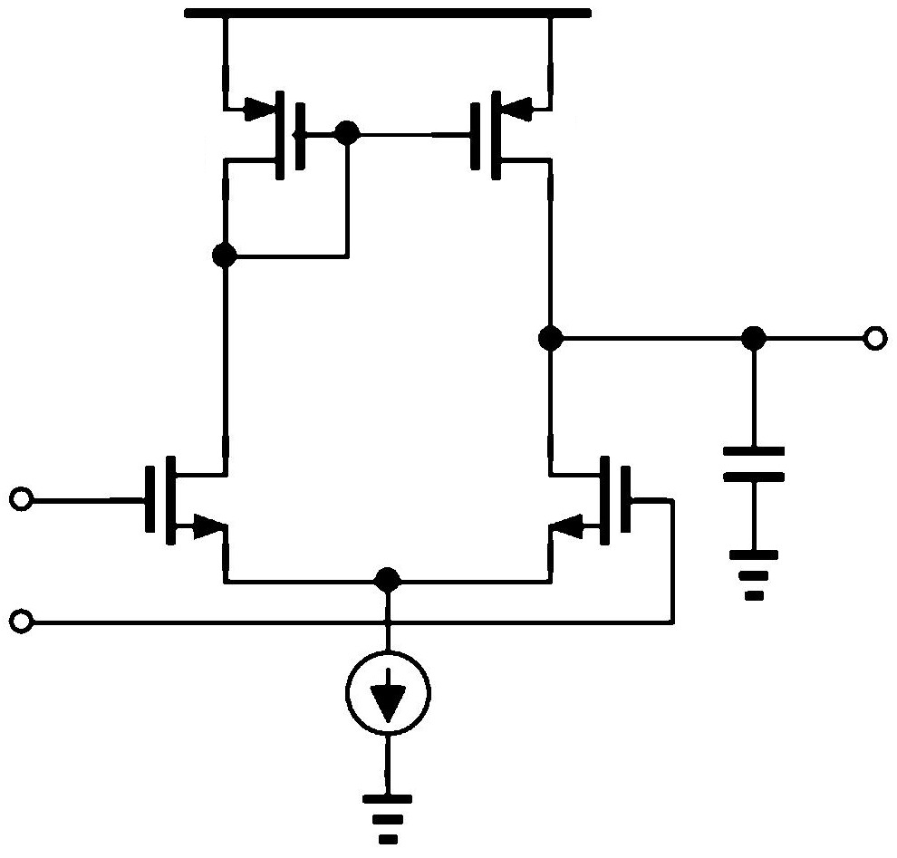

AMS-Net is a dataset containing schematic diagrams and their corresponding netlists in SPICE format.

*SPICE Netlist for circuit 0
M1 7 2 6 6 NMOS W=1u L=1u
M2 8 1 6 6 NMOS W=1u L=1u
I1 6 0 DC 1mA
M4 7 7 VDD VDD PMOS W=1u L=1u
M3 8 7 VDD VDD PMOS W=1u L=1u
C1 0 8 1nF
.MODEL NMOS NMOS (LEVEL=1 VTO=1 KP=1.0e-4 LAMBDA=0.02)
.MODEL PMOS PMOS (LEVEL=1 VTO=1 KP=1.0e-4 LAMBDA=0.02)
.OP
.END